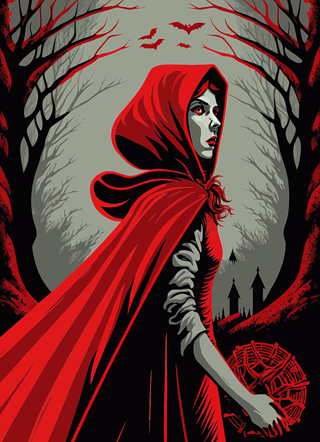
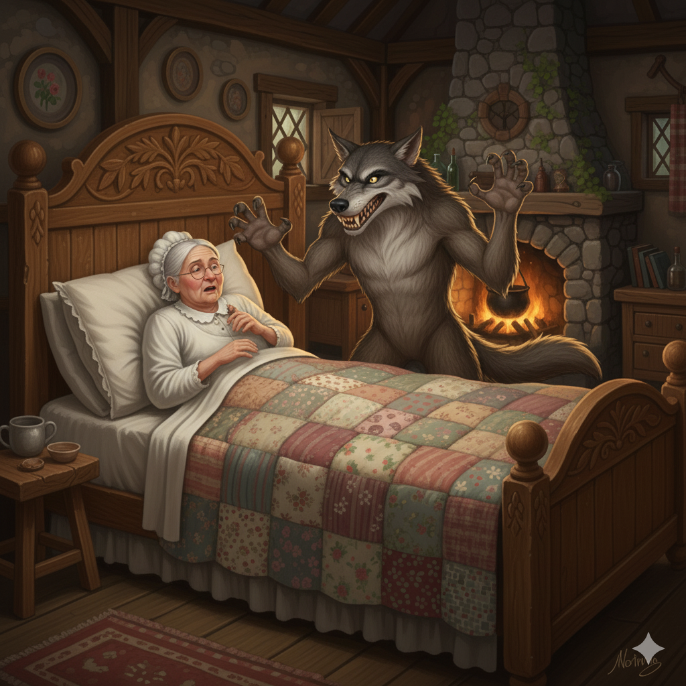

El cuento de Caperucita Roja
Había una vez una niña a la que todos llamaban Caperucita Roja porque siempre llevaba una capa de ese color.
Un día, su madre le encargó que llevara una cesta con pasteles y vino a su abuelita, que vivía al otro lado del bosque. Antes de que partiera, su madre le advirtió que no se saliera del camino ni hablara con extraños.Se adentró en el bosque, pero se entretuvo recogiendo flores.
Mientras tanto, un lobo astuto se cruzó en su camino y le preguntó a dónde iba. Ella respondió que iba a casa de su abuela, pero el lobo, conociendo un atajo, corrió a la casa de la abuela para devorarla.
Después, se vistió con la ropa de la abuela y se metió en la cama para esperar a Caperucita. Cuando Caperucita llegó, notó algo extraño en su "abuela".
—Abuelita, ¡qué ojos tan grandes tienes! —dijo.
—Para verte mejor —respondió el lobo.
—Abuelita, ¡qué orejas tan grandes tienes!
—Para oírte mejor.
—Abuelita, ¡qué boca tan grande tienes!
—¡Para comerte mejor! —gritó el lobo, y se abalanzó sobre ella.
